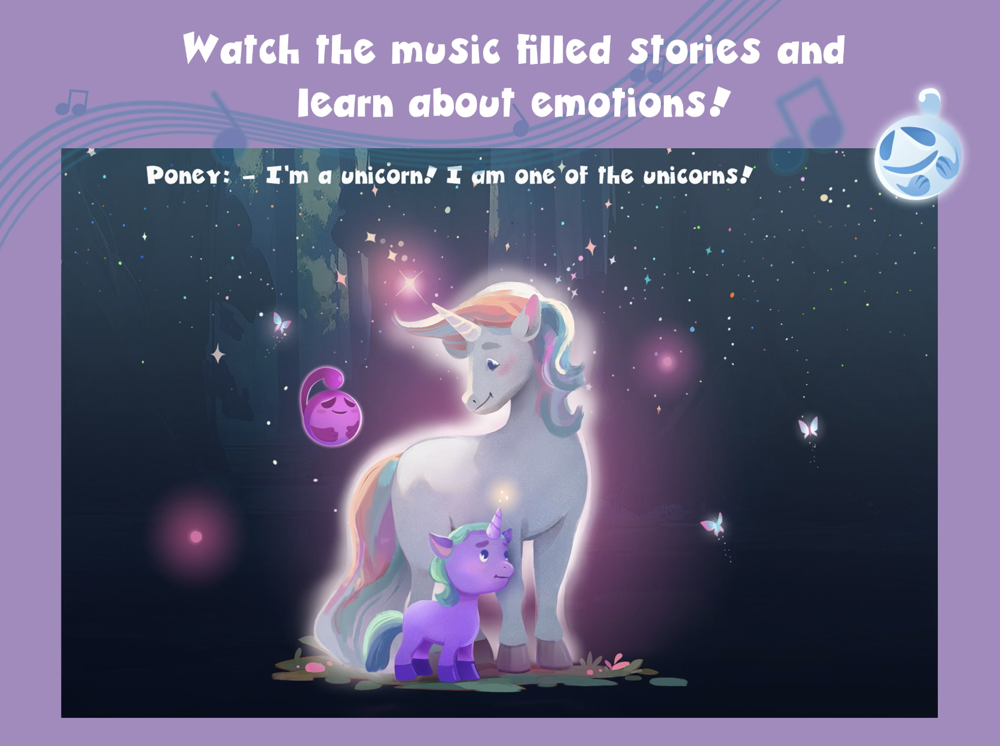
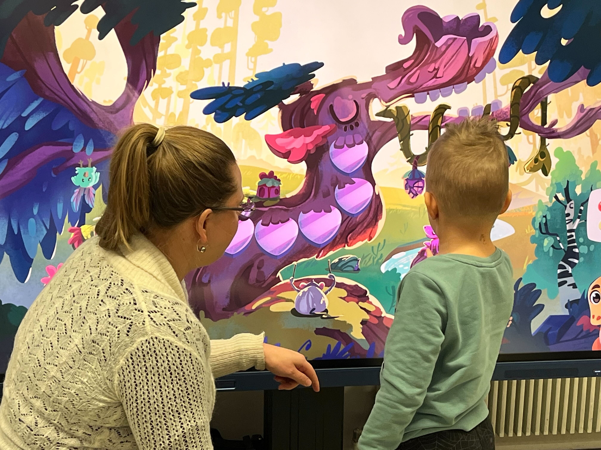
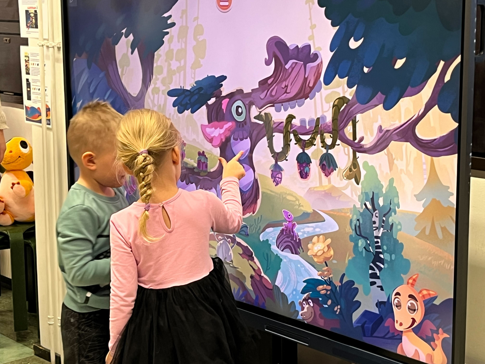

Feel & Play is a musical mobile app that uses games and gamified instruments to teach children emotional intellgence skills. An inspiringly participatory app adventure that combines musicality, visuality and playfulness with multi-user collaboration. Feel and Play was funded by Finland's Ministry of Education, in an effort to promote their goals of improved emotional intelligence in children.

Musical childrens stories compose one of the three app components
I created and implemented a flexible system with Unity Analytics to track how users interacted with the app. Focusing on a simple framework, I focused on essential metrics like session and device IDs, time spent in activities, mini-game completion times, and button interactions.
After laying the groundwork for future improvements, I began to track creative features like painting tools, capturing data on brush usage and music preferences to understand user choices.
These insights helped the team make informed decisions to refine features, improve retention, and communicate user engagement highlights—like hours spent painting—for marketing purposes.
As the lead developer of this Unity project, I guided a small team of developers to improve the quality and functionality of the existing codebase as well as add new features, such as painting. I also handled the porting of the application to Android mobile devices, Apple tablets, and large multitouch screens such as Clevertouch. While there, I also implemented project management tools, ran weekly meetings, and improved documentation
As the sole researcher, I conducted user studies guided by a pedagogical plan designed by child psychologists, music therapists, and educational professionals. My mixed-methods approach included usability testing and observation of 6-10 year olds, supplemented by surveys and interviews with parents and teachers. To address the challenge of playtesting with children, I implemented age-appropriate methods such as smiley face scales for younger participants and think-aloud protocols to gain insights into their decision-making processes.
I created a comfortable, playful testing environment to encourage natural behavior and reduce anxiety. This approach, combined with careful prioritization of research questions based on impact and frequency, allowed me to gather valuable insights despite limited sample sizes due to scheduling constraints.
I analyzed the results using tools like Notion, Miro, and Nielsen's Heuristics, presenting weekly findings to the team. This user-centered approach led to impactful improvements, such as adding clearer cues and indicators after discovering children struggled to grasp minigame objectives. The research ultimately contributed to enhancing the overall user experience for our young audience.

A child testing the Fantasy Instrument. Sometimes the experience is guided by a teacher or therapist.

Fantasy Painting encourages children to create music together and recognize emotions.